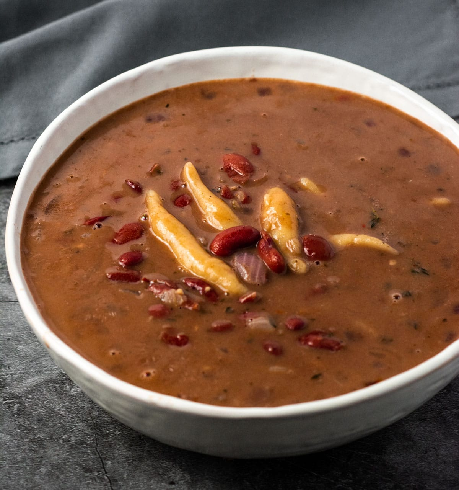

Red Peas Soup
So... I'm a picky eater but put a soup in front me and I'll gobble it down. As such, I learn a lot of soup recipes.
This particular recipe is a childhood favorite of mine and I am proud to say I have mastered it.
Recipe Credit: https://healthiersteps.com/recipe/red-peas-soup/
Ingredients
- 2 cups dried red kidney beans
- 10 cups water
- 1 medium onion, chopped
- 3 cloves garlic, minced
- 3 green onions, chopped
- 3 sprigs of thyme
- 1 medium carrot, peeled and chopped
- 1 medium potato, peeled and chopped
- 1 cup yam, peeled and chopped
- 1 cup coconut milk
- 6 pimento berries
- 2 cubes vegetable bouillons
- 1 whole Scotch Bonnet
- salt, to taste
Instructions
- Sort and wash beans, soak in cold water overnight in a large pot or bowl for at least 8 hours.
- The following day, discard water and rinse beans, place them in a large saucepan with 10 cups of water and bring to boil, lower heat to simmer until tender for about 45 minutes to 1 hour.
- Add chopped onion, garlic, green onions, thyme, carrots, potatoes, yam, coconut milk, allspice, vegetable bouillon, and Scotch bonnet pepper.
- Bring to boil and reduce to a simmer and cook until vegetables are tender about 30 minutes. Discard Scotch bonnet pepper before serving.
The recipe for the soup dumplings can be assessed through the link above. I excluded them for simplicity sake.